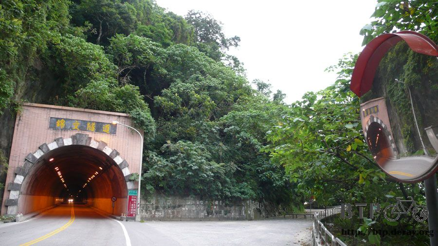
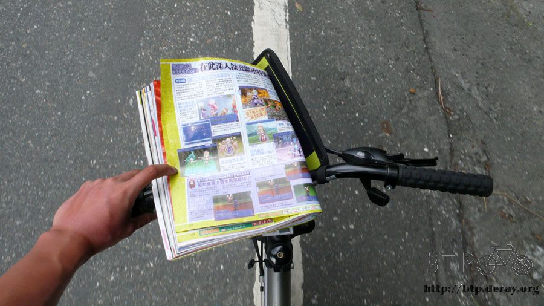
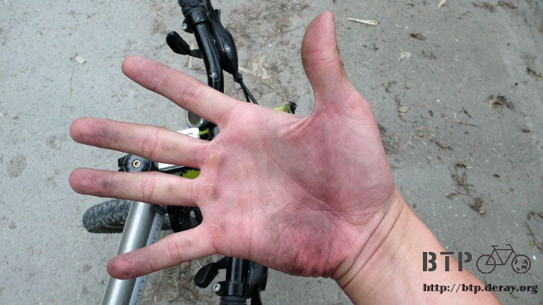

環遊世界的起點
昨天晚上就是在這個小亭子裡窩了一夜，我看書的速度已經很慢了，想不到看完的時候天色依舊沒有亮。
專心看書的時候一點也不覺得冷，等闔上書本開始，馬上覺得一股寒意直襲而來，剛剛看的又不是恐怖故事，沒那麼誇張吧？
從小亭子裡探頭出去看，大夜班的員工躺在涼椅上，蓋著看起來很暖和的棉被，翹著腳正呼呼大睡。
這時候非常後悔，三個小時前他們問我需不需要棉被的時候，我幹麻說不用呢？
繼續窩回小亭子裡，為了明天的精神，加減睡一下，剩下兩天的路程，就心理上都是很輕鬆的，因為第一天可以睡宜蘭自己的家，
第二天就騎回台北，結束環島之行了，但就物理上來說最後兩天是很拼的，第一天是蘇花公路，第二天則是北宜公路。
勉強的稍微睡了一個多小時，看見天空泛出光芒的時候馬上動身閃人，抖一抖僵直的四肢，這點寒冷比起國外來說太小意思了。
跨上車騎一點距離馬上就會熱起來，順利的話應該可以在天黑之前就回到家才是。
好心收留我的員工都還在睡夢之中，特地把對方挖起來只為了說聲謝謝跟再見，有點擾人清夢，悄然離去。
印象中，這應該是我第一次在加油站過夜。
大概五分鐘之後就看見路旁的早餐店已經在營業了，時間還不到六點，真不知道是營業時間早，還是根本整晚都沒休息，做過路卡車司機的生意。
點了炒米粉跟豬血湯，吃過旗山的小吃之後，現在吃名稱一樣的食物，都會覺得味道怎麼相差那麼遠。
心裡很想問老闆娘，這個炒米粉是假的吧@@" 為什麼沒有旗山的那麼好吃？
填飽肚子也暖開了手腳，這時太陽才冒出地平線，比昨天還慘，完全看不見太陽的蹤影，
要不是海平面跟雲層中間有條縫，那連日出的紅光都看不見。
別下雨～別下雨～每天都要這樣默念。
從現在開始就已經算是蘇花公路了，基本上，我一直覺得，只要可以騎腳踏車征服蘇花公路的人，都有可以征服世界的資質。
這個男人很猛，他應該是清潔員或是公務員一類的，騎腳踏車帶著一些簡單的工具整理蘇花沿路的落葉，集中在水溝裡焚燒。
沒看錯喔，是騎腳踏車，怎麼不騎個摩托車比較輕鬆呢？話說他每天這樣騎腳踏車跑蘇花，腳力根本就已經是神人的等級了。
隧道從現在開始要一連經過十幾個，有長有短、有乾淨的也有髒兮兮的，隧道也是蘇花公路的一大特色。

在這個隧道的入口右邊有一條馬路，掛著牌子寫著禁止進入，因為騎自行車進隧道很有壓迫感，老是被後面的大車子追著跑。
心裡想說既然旁邊有路可以走，那何必走隧道呢？
繞道旁邊的路一看，原來根本就不通，前面就是垂直的山壁，所以選擇挖隧道的方式過這一段。
不見得是每次遇到垂直山壁的時候都是用隧道來通行，清水斷崖那一段奇景，就是在陡峭的岩壁中開鑿出一條路來。
隧道有時候挖一挖，莫名其妙還可以通到外面，然後再繼續往前開挖。
這些馬路的修築都已經有好幾十年的歷史，以當時的工業技術可以建設出這些鬼斧神工般的道路，每次經過都感到佩服萬分。
除了馬路之外，火車要走的路幾乎完全都是隧道，想到當年這些辛苦的建築工人，花費那麼多的汗水，修築了這些鐵道。
話說回來，以當時的技術力都能辦到這樣的工程，過了幾十年的今天，要建設一條蘇花高速公路好像說的很困難似的。
但這個建設不完全是技術力上的問題，而是更多環保議題、經濟發展、政治口水上的角力。
蜿蜒的蘇花公路，這是我這輩子第二次騎自行車到這裡來，上次是從對面騎過來，這次則是反方向。
基本上，騎過那一次之後，依稀中我有發過誓，這輩子不要再騎自行車到蘇花來了，根本就是自虐的行為。
那麼多砂石車，那麼多恐怖的隧道，那麼陡峭的山路，那麼危險的騎車環境，可是風景真是一等一的優。
過了幾年，我又跑來騎蘇花了，說實話已經完全忘記當初的那種辛苦，留下來的只有征服的成就感跟美好的景色。
以一個從南北兩邊都完整騎過蘇花公路的我來講，我會推薦從花蓮往蘇澳的方向騎，感覺上比較簡單。
也許是因為今天星期日的緣故，連砂石車都放假了，路上少了很多會跑的凶器，心理壓力自然輕鬆很多。
不然光是聽到『砂石車』這三個字，大家都是皺眉頭，實際感受到砂石車從身邊開過去的壓迫感，更讓人覺得自己是在找罪受，不是在旅行。
多虧出發的早，加上今天假日，這一路上悠哉的慢慢騎，很快的就到了清水斷崖，怎麼看都看不膩的絕佳風景。
往前往後看都是奇景，這樣的路究竟是怎麼修築出來的？
哪一天一定要跑一下圖書館，看能不能找到當時的歷史資料增長點見聞。
走蘇花一定會經過這個牌子，太魯閣國家公園的範圍實在太大了，連蘇花公路也算是其中的一部分。
每個騎自行車到這裡的人都會停下來合照一張，以前已經拍過了，這次就省起來，拍張乾淨清爽的照片。
這種太陽其實不怎麼曬，雲隔離掉了大多的光線，加上已經是十月下旬，已經不算太毒辣的天氣。
剛出發的時候就被曬傷，當時曬紅的皮膚現在已經變黑了，感覺比較防曬，手臂跟臉也是越來越黑，快分不清楚是曬黑還是單純的髒。
從花蓮往蘇澳騎，中間分別會經過三個鄉鎮，依序是和平、南澳跟東澳。
很快的就到了第一個鄉鎮，只要看到很多水泥廠的建築和煙囪就表示鄉鎮到了，一路上都是這樣的情況，連到蘇澳都是。
抵達和平之前會經過一條很長的和平隧道，這真不是人走的，裡面漏水超級嚴重，隨時崩塌垮下來我都不意外。
加上隧道裡居然可以沒有燈！？完全的是什麼也看不見，沒有攜帶照明設備就貿然騎進去的話，會有一種生不如死的感覺。
然後隧道工程本來就很不容易修築，有雙線道就很了不起了，更何況是要開設路肩給自行車騎。
在沒有路肩的情況下，騎起車來根本就是玩命呀～
試想一下，不停的被冰冷的地下水滴的全身冷冰冰，車輪還會四處飛濺出骯髒的泥水，
到處都漆黑一片，東南西北完全搞不清楚，地上一大堆的積水和小碎石，身後還傳來大卡車的轟隆聲....
要是能平安通過蘇花公路上的隧道，在騎車跟過彎的時候小心砂石車的謀殺，基本上蘇花公路不算太有難度。
說爬坡很陡峭？其實最高大概海拔三百出頭，小菜一疊。
要騎完蘇花不難，只是有那麼一點點拿命去換的味道，所以聽到騎自行車環島會搭火車避開蘇花，我都覺得這是OK的。
雖然少看了一些絕佳的景色，但生命還是比較重要，忘了說，蘇花公路上那灑滿地的冥紙，呼呼～三思三思
跟老天賭命出了隧道，就抵達和平了，這邊有一些奇怪的建築物，像這個半球體的東西，這應該是外星人蓋的吧？
貫穿和平的是一條主要道路，名字很西式，可能是用原住民發音的名字直接改成中文，抵達這裡還不到九點，即不累也不餓。
明明就是很難騎的蘇花，怎麼這一次騎起來覺得輕鬆很多呢，最大的功勞應該是我邊騎車邊看雜誌的緣故。

昨天一口氣看完厚厚的靈魂擁抱，閱讀的癮子就被開啟了，心裡想說騎車的時候應該也可以看點比較輕鬆的東西吧？
所以就去買了一本電玩雜誌，一路就邊騎邊看，大多是上坡的時候看，下坡速度太快，風壓也太大，沒辦法固定好雜誌。
就在這麼分心的騎車方式下，專注在雜誌內容中，反而忘記騎車的辛苦。
可是這完全不是一個值得推薦的方式，這樣騎車實在太危險了，請小朋友跟大朋友都不要學習。
基本上，騎車聽音樂就已經夠分心了，更何況是拿本雜誌在翻閱>"<
話說那沒戴手套的雙手一下就被曬黑了，這樣子手就不會變成黑白兩色，但是徒手握著手把騎車，久了之後挺痛的說。
看著雜誌繼續爬山路，回頭看看和平最後一眼，這個地方好像完全沒有任何改變，幾乎是停止在時間的洪流當中。
一直耳聞颱風的緣故讓蘇花公路斷掉，可是一直騎都沒發現有什麼嚴重的災情，電視上播報起來就是很嚴重。
過了和平下一站就是南澳，這段路上終於看到了明顯的災情，道路塌陷了一個車道，至今還在搶修。
星期天車流比較少的緣故吧，只有簡單的交通管制，也不見有什麼塞車的情形，從這個角度看不到崩塌的情況，往前騎一點就知道厲害。
右線車道，已經全部都塌到山谷中，左邊也被落石跟泥土給堵住，所以只勉強的通了中間那一段。
工人很辛苦的在作業，重新灌漿作一個新的地基出來，底下的山林很慘不忍睹，被一大堆的水泥塊、石塊給壓損的亂七八糟。
我忘了以前騎到這邊有沒有經過這個觀音橋，一大塊石頭上面有壁畫，還有一些拜拜用的神桌，感覺是在鎮壓什麼東西。
雖然畫的是神明，但有點恐怖的感覺，別這樣呀～我只想要騎車呀，幹麻嚇我 >"<
這個海呀，顏色分的非常清楚，基本上靠近海岸邊的會比較淺色，遠一點的就會變成深藍色，因為陽光穿透海水的深淺不一所形成。
這一段的海景顏色特別漂亮，顏色分明的程度簡直像是用墨水盤調過的一樣犀利清楚。
很快的就到了第二站，南澳，不論從宜蘭往南騎，還是從花蓮往北騎，大家好像都會選在南澳吃午餐。
導致這邊的餐廳數量特別多，競爭激烈下，價錢也比較便宜，東西相對也好吃。
點一盤料多味美的排骨飯努力嗑光它，勞動之後的美食真是美味數十倍，運動之後連喝水都覺得很甘甜，吃飯也是一樣的意思。
待在餐廳裡稍微休息一下，這間其實是冰店，簡餐是附帶經營的，吃完飯之後理所當然的就吃起了冰來。
一開始吃紅豆牛奶冰，哇～好吃的忘記拍照就見杯底了，接著再點一份花生冰，整個很有特色，不是用一般的水煮花生。
上面有花生糖刨成粉，硬花生和煉乳，底下的也不是刨冰，而是像冰淇淋的甜冰。
吃完這一份，不自覺的又點了三色冰，吃到沒錢付賬還跑去便利商店提款，一出餐廳馬上就被騎車旅行的人堵到。
果然騎到後半段，路線就這麼一條，加上今天是假日，想閃也閃不了，一邊喊著救命一邊騎車想脫逃，依然徒勞無功=..=
吃完冰就在店門口小睡了一下，昨天只睡了一個多小時的後遺症現在才浮現，吃飽果然會讓人想睡覺。
騎到南澳就只剩下最後一半了，下一個停靠站是東澳，還好蘇花公路分這麼多段，雖然上上下下的爬坡，但起碼中間可以休息。
南澳往東澳的路上看見了第二次的颱風災害，看起來更是不怎麼嚴重，只掛了一個『路基缺口』的牌子。路基缺口？什麼意思呀？
挖哩耶，整條路有一半都塌陷下去了，要是當時有車輛經過的話，真不敢想像會發生什麼事情。
塌的這麼嚴重，居然還是能開放通行，真是眼不見為淨，開車快速通過比較不會怕，停下來看到原來壞的這麼嚴重，心頭都碰碰跳。
不知不覺就抵達東澳了，這邊的學校正好在辦活動，大概是類似夏令營的東西吧，一群小朋友跟指導的老師互動。
看到這些有模有樣的帳棚，想到自己睡了好幾個月的單人帳，其實單人帳應該不算是帳棚吧。
雖然我很不願意承認，但是它看起來真的很像屍袋，每次我在外面露營，要是被路人看到，大家都會懷疑是不是有棄屍案。
如果一般的帳棚也可以方便好攜帶的話，下次應該不會選擇帶單人帳，這樣睡覺很沒有家的感覺，有時候會覺得心酸酸(泣)。
東澳比起南澳明顯就小很多，這邊也有一個記憶中很值得紀念的場所，當初環島第一次鼓起勇氣跟警察局要水喝就是在東澳。
雖然整體來說比較小，但是生活環境比較好，也有自己的火車站，工廠跟水泥廠也是很多，但是比起和平算是小意思了。
看完雜誌終於可以認真的騎車，最後這一段東澳往蘇澳的路，也是最難騎的一段，少了雜誌分散注意力，突然覺得上坡變得好難爬。
喘氣之餘看著電線桿，上面貼著『幸福』的標籤，連電線桿都有幸福，人也要努力去追求自己的幸福呀。
不知名的花系列，花苞很多，開花也不少，一整片綠樹中突然冒出一株開滿鮮花的樹特別引人注目。
歐耶～這邊就是最後的一段路了，看見蘇澳就表示苦難已經結束，接下來都是下坡路段，不要得意忘形摔車的話，今天已經算結束了。
蘇澳的海鮮好好吃呀～沙灘也很漂亮，可惜假日的時候都被觀光客給塞滿，越來越難享受以前那種悠靜的生活步調。
沒戴手套騎車，除了手心會痛和留下印痕之外，整個手也變得髒兮兮的。

這還是在南澳吃飯的時候才洗過，這麼快又髒掉，不過穿著拖鞋跟不戴手套騎車的感覺，有一種很難形容的自在感。
長途旅行以來，手套一直都是不離身的東西，鞋子可以換球鞋或是拖鞋，眼鏡可以帶一般的或是太陽眼鏡，但手套從來都沒換過。
這次突然把手套弄丟，因禍得福的可以用親手去握著單車騎乘，有種痛快的真切感。
那種痛快法，跟赤腳踩踏板的感覺相去不遠，想起一個朋友說的話：『痛跟痛快真是一線之間』
一口氣滑下蘇花公路，今天的作業就告一段落囉～接下來只要慢慢的從蘇澳騎到宜蘭去，晚上就可以吃阿姨煮的家常菜。
沒事我很少買飲料來喝，但這個飲料店的定價實在太令人震驚了，什麼東西都是十塊十塊的。
我說老闆娘，你這樣生意作的也太心酸了吧？一杯才十元，比賣水還難賺呀。
話說如此，我還是買了兩杯便宜的飲料當水喝，等明天回到台北，物價就不是這麼一回事了。
這個一定要笑一下，學校名稱寫那麼長，宜蘭縣蘇澳鎮蘇澳國民小學，拜託，又不是在寫地址，幹麻一長串都寫出來。
而且不只中文這麼寫，連英文也是一口氣全部都翻譯出來，難道不能簡單的寫個蘇澳國小就好嗎？
接下來就沒什麼特別的了，一路慢慢的騎，景色越來越熟悉，出國這麼久，現在是離家最近的時刻。
回去之前先去麥當勞報到，這邊總是有網路可以用，坐在叔叔的旁邊，又靠著單車，造成很多小朋友想親近他都沒辦法。

當我在店門口上網到一半，有一對母女檔正好買完兒童餐要回家，可愛的小女孩突然轉頭對著我揮手，露出可愛的笑容說掰掰。
當場讓我愣了一下，也舉起手揮一揮，微笑的跟小女孩說掰掰，心裡想說這個小女孩真是可愛又有家教。
結果被她媽媽給看到，馬上臉色一鐵青就把小女孩帶走，還叮嚀她說不可以隨便跟奇怪的陌生人講話。
呃....原來我是奇怪的陌生人orz
後來仔細想一想，那個小女孩應該是跟麥當勞叔叔說掰掰，只是我剛好坐在他旁邊，所以整個誤會很大，還造成小女孩被誤解。
以後她就不敢跟麥當勞叔叔講話了，這都是我的錯，請原諒我這個怪叔叔~_~
然後就是家了，家門口的這條路，是小時候玩遊戲的起點。
隨著自己越長越大，好像記憶中的一切都跟著縮小了，以前看起來很大的地方，原來只有一丁點。
那時候會騎著破破的腳踏車，說『現在我們去環遊世界』，就從這裡開始，往前騎，繞過田園、豬圈、竹林、鐵道、果園，然後回到家裡。
過了二十幾年了，景色也漸漸的改變，小時後可以抓魚抓蝦的河流，現在看起來只是一條水溝。
不論再怎麼改變，我不會忘記台灣是我的家，我永遠知道自己的根在哪。
如果將來能夠有機會去國外旅行甚至是環遊世界，這裡，台灣，宜蘭，二結，家門口的這條路，永遠都會是出發的起點。
更是一定要平安回來的家。
繼續閱讀：10.22 Let's Bike！